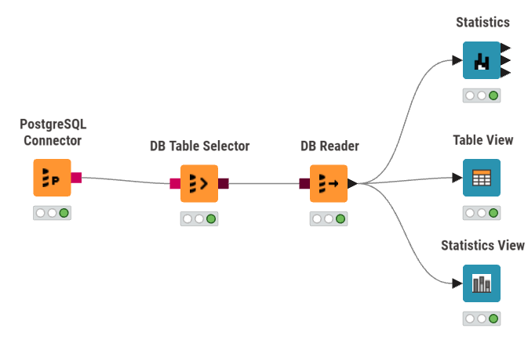

Pemindahan Data ke Cloud (Aiven) dan Analisis Statistik Menggunakan KNIME#
1. Tujuan#
Tugas ini bertujuan untuk memindahkan data hasil tugas sebelumnya dari file CSV ke database PostgreSQL berbasis cloud menggunakan Aiven, kemudian mengambil kembali data tersebut menggunakan KNIME untuk dilakukan analisis statistik.
Tahapan yang dilakukan meliputi:
Menyiapkan dataset hasil tugas sebelumnya.
Memindahkan data ke Aiven PostgreSQL.
Menghubungkan Aiven PostgreSQL dengan KNIME.
Mengambil data dari database menggunakan KNIME.
Menampilkan data menggunakan Table View.
Melakukan analisis statistik menggunakan Statistics.
Menjelaskan properti statistik yang dihasilkan KNIME.
Memberikan contoh perhitungan berdasarkan data asli.
2. Dataset#
Dataset yang digunakan adalah dataset kualitas udara Kadur dengan tabel PostgreSQL:
kualitas_udara_kadur
Dataset terdiri dari beberapa kolom statistik harian, yaitu:
No |
Kolom |
Tipe Data |
Keterangan |
|---|---|---|---|
1 |
|
Date/Time |
Tanggal pengamatan |
2 |
|
Float |
Nilai minimum pengamatan |
3 |
|
Float |
Nilai maksimum pengamatan |
4 |
|
Float |
Nilai rata-rata pengamatan |
5 |
|
Float |
Standar deviasi pengamatan |
6 |
|
Integer |
Jumlah sampel |
7 |
|
Integer |
Jumlah data yang tidak tersedia |
8 |
|
Float |
Nilai median |
9 |
|
Float |
Persentil ke-10 |
10 |
|
Float |
Persentil ke-90 |
Data tersebut merupakan data statistik harian, sehingga nilai seperti nilai_min, nilai_max, nilai_mean, median, p10, dan p90 sudah merupakan hasil pengolahan dari pengamatan pada masing-masing tanggal.
3. Memindahkan Data ke Aiven PostgreSQL#
Data hasil tugas sebelumnya dimasukkan ke database Aiven PostgreSQL menggunakan perintah SQL INSERT.
Struktur perintah yang digunakan adalah:
INSERT INTO kualitas_udara_kadur
(tanggal, nilai_min, nilai_max, nilai_mean, stdev,
sample_count, no_data_count, median, p10, p90)
VALUES
(...);
Contoh salah satu baris data asli:
tanggal = 2026-08-24
nilai_min = 9.562372724758461E-6
nilai_max = 3.554132490535267E-5
nilai_mean = 2.5862272195809055E-5
stdev = 1.0145439252970663E-5
sample_count = 8
no_data_count = 0
median = 2.8113074222346768E-5
p10 = 9.562372724758461E-6
p90 = 3.554132490535267E-5
Setelah data berhasil dimasukkan ke Aiven PostgreSQL, database dapat diakses oleh KNIME.
4. Menghubungkan Aiven PostgreSQL dengan KNIME#
Workflow yang digunakan untuk mengambil data dari Aiven PostgreSQL adalah:

4.1 PostgreSQL Connector#
PostgreSQL Connector digunakan untuk membuat koneksi antara KNIME dan database PostgreSQL yang berada pada Aiven.
Parameter koneksi yang diperlukan meliputi:
Host
Port
Database
Username
Password
SSL
Setelah seluruh parameter diisi sesuai informasi koneksi Aiven, koneksi dijalankan sehingga KNIME dapat berkomunikasi dengan database.
4.2 DB Table Selector#
DB Table Selector digunakan untuk memilih tabel yang akan digunakan.
Tabel yang dipilih adalah:
kualitas_udara_kadur
Dengan node ini, KNIME menentukan tabel yang akan dibaca dari database.
4.3 DB Reader#
DB Reader digunakan untuk mengambil isi tabel dari database dan mengubahnya menjadi data table yang dapat digunakan dalam workflow KNIME.
Setelah node berhasil dijalankan, data dapat diteruskan ke Table View dan Statistics.
5. Menampilkan Data Menggunakan Table View#
Table View digunakan untuk melihat isi dataset yang telah berhasil diambil dari Aiven PostgreSQL.
Konfigurasi yang digunakan:
Includes : seluruh kolom
Excludes : tidak ada
Dengan demikian, seluruh kolom dataset ditampilkan:
tanggal
nilai_min
nilai_max
nilai_mean
stdev
sample_count
no_data_count
median
p10
p90
Table View digunakan untuk memastikan bahwa data dari database telah berhasil masuk ke KNIME.
6. Analisis Statistik Menggunakan KNIME#
Setelah data berhasil dibaca, node Statistics digunakan untuk memperoleh informasi statistik dari dataset.
Pada hasil Statistics KNIME terdapat beberapa properti, yaitu:
No. Missing
No. Valid
Min
Max
Q1
Mean
Q3
Median
Std. Dev.
Variance
Skewness
Kurtosis
Mode
Hasil Statistics menunjukkan bahwa sebagian besar kolom memiliki 210 data valid, sedangkan terdapat perbedaan pada beberapa kolom.
Kolom sample_count memiliki 211 data valid karena seluruh data bernilai 8.
Kolom no_data_count juga memiliki 211 data valid.
Sementara itu, kolom stdev hanya memiliki 182 data valid. Hal ini berarti terdapat 29 nilai yang tidak tersedia pada kolom stdev.
7. Hasil Statistics dari KNIME#
Berikut adalah hasil yang diperoleh dari Statistics KNIME berdasarkan output yang digunakan.
Column |
Missing |
Valid |
Min |
Max |
Q1 |
Mean |
Q3 |
Median |
Std. Dev. |
Skewness |
Kurtosis |
|---|---|---|---|---|---|---|---|---|---|---|---|
|
0 |
210 |
-9.975387E-6 |
4.369137E-5 |
9.126466E-6 |
1.524748E-5 |
2.076363E-5 |
1.456842E-5 |
7.136036E-6 |
0.003074 |
sesuai output KNIME |
|
0 |
210 |
-9.975387E-6 |
4.369137E-5 |
1.498667E-5 |
2.256255E-5 |
2.678749E-5 |
2.082930E-5 |
7.687196E-6 |
0.004395 |
sesuai output KNIME |
|
0 |
210 |
-9.975387E-6 |
3.673395E-5 |
8.709820E-6 |
1.365682E-5 |
1.819711E-5 |
1.327631E-5 |
6.110534E-6 |
0.002801 |
sesuai output KNIME |
|
0 |
210 |
-2.121630E-5 |
3.673395E-5 |
1.470000E-9 |
5.439857E-6 |
1.107971E-5 |
6.060067E-6 |
6.569987E-6 |
0.001279 |
sesuai output KNIME |
|
0 |
211 |
0 |
7 |
0 |
1.672986 |
4 |
0 |
2.087374 |
353 |
sesuai output KNIME |
|
0 |
210 |
-2.121630E-5 |
3.673395E-5 |
2.417064E-6 |
8.011721E-6 |
1.361348E-5 |
8.280615E-6 |
6.789615E-6 |
0.001747 |
sesuai output KNIME |
|
0 |
210 |
-9.975387E-6 |
4.369137E-5 |
1.498667E-5 |
2.256255E-5 |
2.678749E-5 |
2.082930E-5 |
7.687196E-6 |
0.004395 |
sesuai output KNIME |
|
0 |
211 |
8 |
8 |
8 |
8 |
8 |
8 |
0 |
0 |
0 |
|
29 |
182 |
0 |
3.14E-5 |
3.318747E-6 |
5.627754E-6 |
7.988738E-6 |
5.667744E-6 |
2.969852E-6 |
0.001196 |
sesuai output KNIME |
Catatan: Nilai Skewness dan Kurtosis pada tabel di atas harus dibaca berdasarkan posisi kolom pada output Statistics KNIME yang ditampilkan. Angka 0.0030739, 0.0043949, 0.0028013, dan seterusnya pada output yang dikirim merupakan nilai setelah Std. Dev. dan Variance sesuai struktur output Statistics.
8. Penjelasan Setiap Properti Statistik#
8.1 Column#
Column menunjukkan nama variabel yang sedang dianalisis.
Contohnya:
Column = nilai_mean
berarti seluruh statistik pada baris tersebut dihitung berdasarkan 210 data valid pada kolom nilai_mean.
8.2 No. Missing#
No. Missing menunjukkan jumlah nilai yang tidak tersedia atau kosong pada suatu kolom.
Berdasarkan hasil KNIME:
median= 0 missingnilai_max= 0 missingnilai_mean= 0 missingnilai_min= 0 missingno_data_count= 0 missingp10= 0 missingp90= 0 missingsample_count= 0 missingstdev= 29 missing
Jadi, terdapat 29 nilai missing pada kolom stdev.
Hal tersebut menyebabkan jumlah data valid stdev hanya:
8.3 No. Valid#
No. Valid menunjukkan jumlah data yang tersedia dan dapat digunakan untuk perhitungan statistik.
Contoh pada nilai_mean:
Sedangkan sample_count memiliki:
Untuk stdev:
Karena:
8.4 Min#
Min menunjukkan nilai terkecil dalam suatu kolom.
Sebagai contoh, pada kolom nilai_min, hasil KNIME menunjukkan:
atau:
-0.0000212162976822583
Jadi, nilai paling kecil yang terdapat pada kolom nilai_min adalah:
8.5 Max#
Max menunjukkan nilai terbesar dalam suatu kolom.
Pada kolom nilai_mean, KNIME menghasilkan:
atau:
0.000036733948945766315
Dengan demikian, nilai terbesar pada kolom nilai_mean adalah:
8.6 Q1#
Q1 atau Quartile 1 menunjukkan nilai batas 25% data terbawah.
Pada kolom nilai_mean, KNIME menghasilkan:
atau:
0.000008709820363606013
Artinya, sekitar 25% data nilai_mean berada di bawah atau sama dengan nilai tersebut.
8.7 Mean#
Mean merupakan rata-rata seluruh data valid.
Rumus:
Pada kolom nilai_mean, KNIME menghasilkan:
atau:
0.0000136568210251653
Karena terdapat 210 data valid, secara konsep perhitungannya adalah:
Hasilnya:
8.8 Q3#
Q3 atau Quartile 3 merupakan nilai batas 75% data.
Pada kolom nilai_mean, hasil KNIME:
atau:
0.000018197112240159186
Artinya, sekitar 75% data nilai_mean berada di bawah atau sama dengan nilai tersebut.
8.9 Median#
Median merupakan nilai tengah dari data setelah data diurutkan.
Pada kolom nilai_mean, KNIME menghasilkan:
atau:
0.000013276309815521241
Karena terdapat 210 data valid, median ditentukan berdasarkan posisi tengah data yang telah diurutkan.
Secara konsep:
Hasil yang diperoleh KNIME adalah:
8.10 Std. Dev.#
Std. Dev. atau Standard Deviation menunjukkan tingkat penyebaran data terhadap nilai rata-ratanya.
Pada kolom nilai_mean, KNIME menghasilkan:
atau:
0.000006110534047616307
Nilai tersebut menunjukkan tingkat penyebaran data nilai_mean terhadap rata-ratanya.
Untuk kolom stdev, hasil KNIME adalah:
Perhitungan stdev hanya menggunakan 182 data valid karena terdapat 29 nilai missing.
8.11 Variance#
Variance merupakan ukuran penyebaran data yang berkaitan dengan kuadrat selisih data terhadap rata-rata.
Pada output KNIME, nilai variance dapat digunakan untuk mengetahui tingkat variasi data secara kuadrat.
Secara umum:
Sebagai contoh, untuk nilai_mean, jika standar deviasinya:
maka variance secara matematis berkaitan dengan kuadrat nilai tersebut:
8.12 Skewness#
Skewness menunjukkan kemencengan distribusi data.
Pada output KNIME, nilai skewness digunakan untuk mengetahui apakah distribusi cenderung simetris atau miring ke salah satu sisi.
Untuk kolom nilai_mean, nilai skewness pada output adalah sekitar:
Nilai tersebut sangat dekat dengan nol.
Karena:
maka distribusi nilai_mean dapat dikatakan relatif simetris.
8.13 Kurtosis#
Kurtosis menunjukkan karakteristik bentuk distribusi data, terutama terkait ketebalan ekor dan keberadaan nilai ekstrem.
Nilai kurtosis harus dibaca dari kolom Kurtosis pada output Statistics KNIME.
Interpretasi umumnya:
mendekati 0 → distribusi mendekati distribusi normal jika yang digunakan adalah excess kurtosis;
positif → ekor distribusi relatif lebih berat;
negatif → ekor distribusi relatif lebih ringan.
Dalam dataset ini, interpretasi kurtosis dilakukan berdasarkan angka yang ditampilkan langsung oleh KNIME.
8.14 Mode#
Mode merupakan nilai yang paling sering muncul dalam suatu kolom.
Pada sample_count, hasil KNIME menunjukkan:
8 (211; 100.0%)
Artinya nilai:
muncul sebanyak:
kali atau:
dari seluruh data.
Dengan demikian, mode sample_count adalah:
Untuk no_data_count, mode yang ditampilkan adalah:
0 (126; 59.72%)
Artinya nilai 0 muncul sebanyak 126 kali atau sekitar 59,72% dari data.
9. Analisis Khusus Kolom sample_count#
Kolom sample_count memiliki karakteristik yang sangat konsisten.
Hasil KNIME:
Mode:
sebanyak:
atau:
Hal ini menunjukkan bahwa seluruh baris memiliki jumlah sampel yang sama, yaitu 8.
Karena tidak terdapat variasi:
untuk seluruh data.
Akibatnya:
10. Analisis Khusus no_data_count#
Kolom no_data_count menunjukkan jumlah data yang tidak tersedia pada setiap tanggal.
Hasil KNIME:
Std. Dev.:
Dari mode:
0 (126; 59.72%)
dapat diketahui bahwa nilai 0 merupakan nilai yang paling sering muncul.
Artinya, sebanyak 126 dari 211 data memiliki no_data_count = 0.
Selain itu, terdapat:
6 = 15 data
7 = 15 data
1 = 14 data
4 = 14 data
2 = 13 data
5 = 10 data
3 = 4 data
Sehingga nilai no_data_count memiliki variasi dari 0 sampai 7.
11. Analisis Khusus Kolom stdev#
Kolom stdev memiliki karakteristik berbeda dari kolom lainnya.
Hasil KNIME menunjukkan:
dan:
Hal tersebut menunjukkan bahwa dari total 211 baris:
data pada kolom stdev tidak tersedia.
Nilai minimum:
Nilai maksimum:
Mean:
Median:
Std. Dev.:
Dengan demikian, kolom stdev mempunyai jumlah data valid yang lebih sedikit dibandingkan sebagian besar kolom lainnya.
12. Contoh Perhitungan Berdasarkan Data Asli#
Untuk memberikan contoh perhitungan, digunakan lima baris pertama dari dataset pada kolom nilai_mean.
Tanggal |
Nilai |
|---|---|
2026-08-24 |
0.000025862272195809055 |
2026-08-23 |
0.000010208570919140974 |
2026-08-22 |
0.00001802205906642484 |
2026-08-21 |
0.00000897044879079087 |
2026-08-20 |
0.000009069927756399922 |
12.1 Mean dari Lima Data Asli#
Rumus:
Maka:
Hasil:
atau:
12.2 Median dari Lima Data Asli#
Data diurutkan dari terkecil sampai terbesar:
Karena terdapat lima data, nilai tengah adalah data ke-3:
12.3 Min dari Lima Data Asli#
Nilai terkecil adalah:
12.4 Max dari Lima Data Asli#
Nilai terbesar adalah:
12.5 Range dari Lima Data Asli#
Range dihitung dengan:
Jadi:
13. Kesimpulan#
Berdasarkan proses yang telah dilakukan, dataset kualitas udara Kadur berhasil dipindahkan ke Aiven PostgreSQL dan kemudian diakses melalui KNIME.
Workflow yang digunakan adalah:
Hasil Statistics KNIME menunjukkan bahwa sebagian besar kolom memiliki 210 data valid, sedangkan sample_count dan no_data_count memiliki 211 data valid. Kolom stdev memiliki 182 data valid dan 29 nilai missing.
Kolom sample_count mempunyai nilai yang sama pada seluruh baris, yaitu 8, sehingga mean, median, minimum, maksimum, dan mode semuanya bernilai 8, sedangkan standar deviasinya 0.
Kolom no_data_count memiliki nilai antara 0 sampai 7 dengan mean sekitar 1,673. Nilai 0 merupakan mode dan muncul sebanyak 126 kali atau 59,72%.
Untuk kolom nilai_mean, KNIME menghasilkan mean sebesar:
dan median:
dengan nilai minimum:
dan maksimum:
Hasil tersebut menunjukkan bahwa KNIME berhasil digunakan untuk memperoleh gambaran statistik dari dataset yang telah disimpan pada cloud database Aiven PostgreSQL.